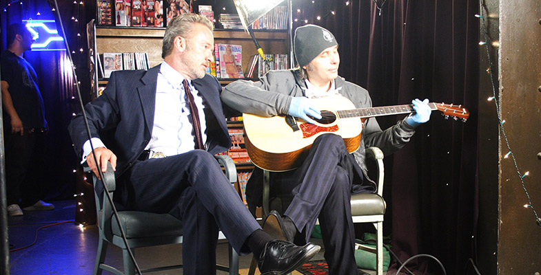
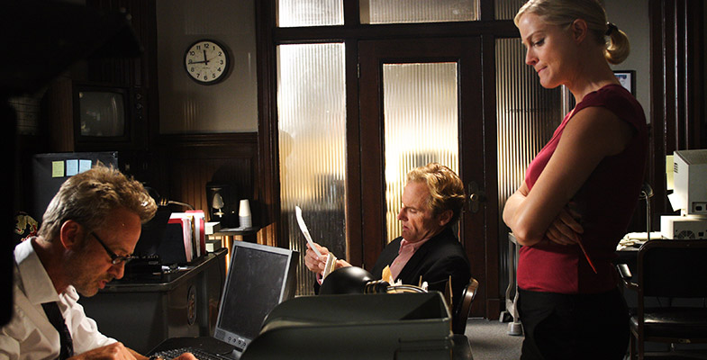

Here is just a sample of media that relates to Charles Adelman

Here is just a sample of media that relates to Charles Adelman
Charles Adelman on the set of "2:13"
Mark Thompson and Dwight Yoakam on the set of "2:13"
Charles Adelman and Mark Thompson going over script notes between takes
Charles Adelman speaking at the "Man in the Moon" event in Salt Lake City
Charles Adelman directing the Thomson Reuters Elite 2012 Global User Conference - Keynote session
CTO of Thomson Reuters Elite preparing for his Keynote address
8 time Emmy Award winnder Karen Lee Cohen and Charles Adelman behind-the-scenes
Charles Adelman and the AEI team (Hunter Long, Miguel Huerrera, Michelle Moeller, Jessica Adelman, Karen Lee Cohen, Charles Adelman, Robert Denton)
Thomson Reuters Elite Vantage 2013 pre-produciton with Charles Adelman and AllCom
Meet and greet with Utah Governor Gary R. Herbert (w Charles Adelman, Joe Lake and Dan Kass)
Meet and greet with Utah Governor Gary R. Herbert (w Charles Adelman, Joe Lake and Dan Kass)
A little goofing off between takes on the set of "2:13" (w/Teri Polo and Charles Adelman)
Reviewing footage w/ Kevin Pollak and Charles Adelman
Wardrobe check on the set of "2:13" (w/ Mark Thompson and Charles Adelman)
In the moment on the set of "2:13" (w/ Mark Thompson, Jere Burns and Teri Polo)
Hollywood Towers scene setup on the set of "2:13" w/ Charles Adelman
Closing funeral scene on the set of "2:13" (w/ Charles Adelman and Mark Thompson)
Between "2:13" scenes on location w/ Charles Adelman
Copyright © 2014 Charles Adelman. All Rights Reserved.